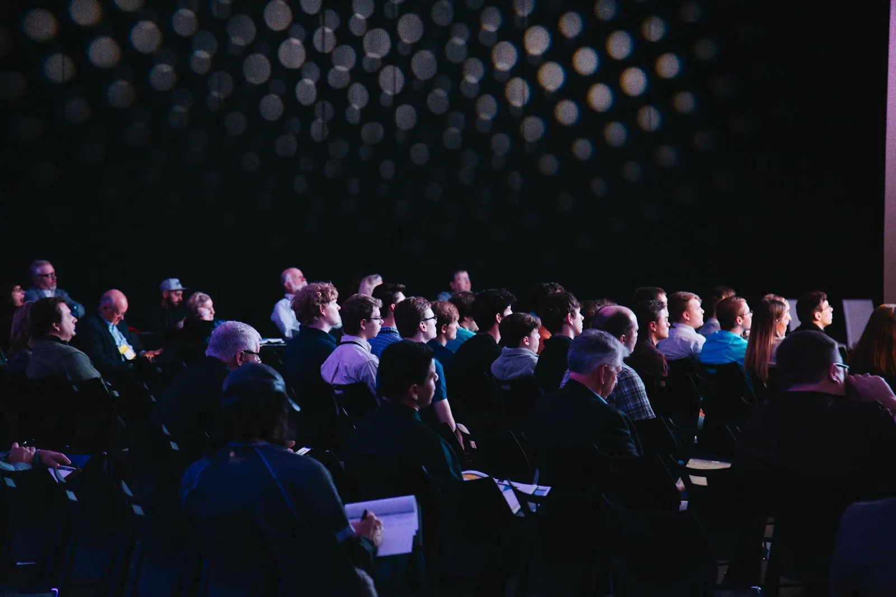
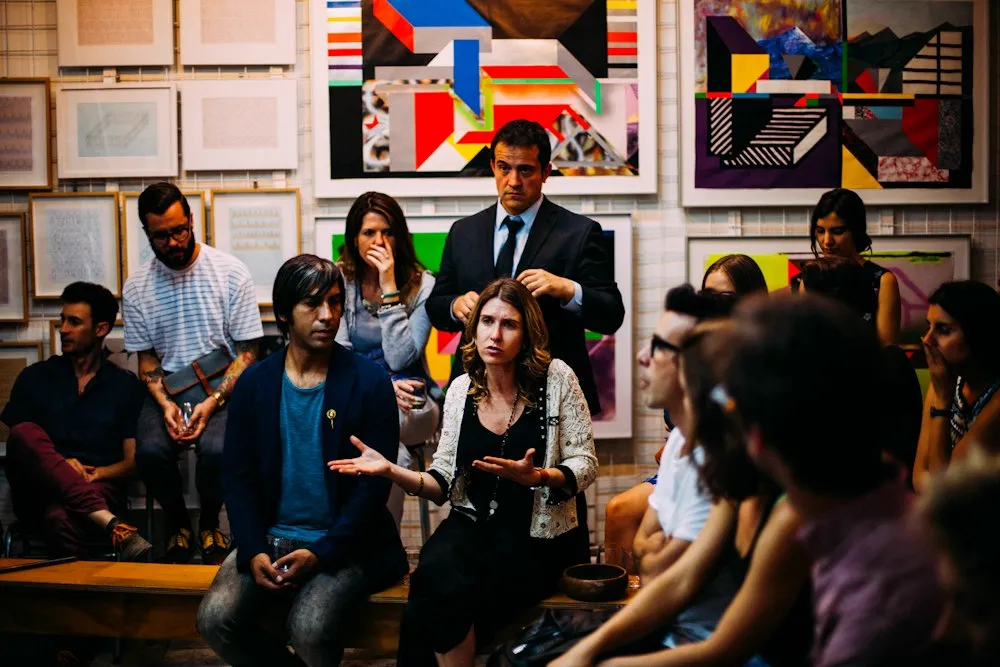
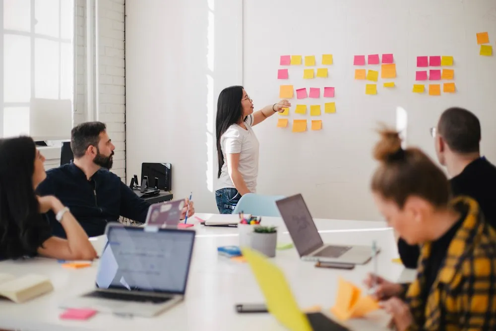

Preço, margem e planejamento. Entenda os impactos das mudanças na rotina das empresas e amplie a conversa com seus clientes.
Tributação · Gestão · DecisãoNos vemos
no Conecta.
12 de dezembro de 2026 · Ibirité, MG
Como patrocinador Master do Conecta Cnpjotas 2026, o DêConta convida você para um dia de conteúdo e conexões.
Quero ir ao ConectaConecta Cnpjotas 202612 de dezembro · Ibirité, MG

Patrocinador Master
12 de dezembroSábado, em 2026
Das 8h às 17hUm dia de encontro
Fundação Helena AntipoffIbirité, Minas Gerais

A gente se conecta
para ir além.
No dia a dia, o DêConta está junto do seu escritório. No Conecta, a conversa ganha novos encontros.
Queremos reunir nossos clientes em um dia para olhar para o negócio, compartilhar experiências e conhecer quem também está construindo o futuro das empresas.
Realizado pela Cnpjotas, o Conecta reúne empreendedores, gestores e lideranças para discutir gestão consciente para crescer com impacto. E o DêConta estará presente como patrocinador Master.
Conhecer o eventoIdeias de hoje.
Próximos passos.
Três temas que já fazem parte das conversas dos seus clientes e das decisões do seu escritório.
Novas formas de trabalhar, organizar processos e usar informações para decidir. Uma conversa sobre tecnologia no mundo real dos negócios.
Tecnologia · Processos · Produtividade
Palestras, painéis e encontros com quem empreende.
Ver a programação oficialSua marca também
pode estar lá.
O DêConta é patrocinador Master. O seu escritório também pode fazer parte desse encontro como patrocinador.
Apresente sua marca a empresários e gestores, conheça outros negócios e participe do ambiente de conexões do Conecta.
Consulte a organização para conhecer as cotas, os formatos de participação e as contrapartidas disponíveis.
Quero ser patrocinadorO próximo contato pode
começar aqui.
Nos encontramos
em Ibirité.
Reserve o sábado para sair da rotina e abrir espaço para novas ideias.
Fundação Helena Antipoff
Escola Técnica Sandoval Soares de Azevedo
Rua Quarenta e Dois, 1-283, Campos Filho
Ibirité, MG
Antes de ir
Como compro meu ingresso?
Os botões desta página levam ao site oficial do Conecta Cnpjotas. Por lá você consulta os ingressos disponíveis e segue para a compra.
O evento é presencial?
Sim. O Conecta Cnpjotas 2026 acontece em 12 de dezembro na Fundação Helena Antipoff, em Ibirité, Minas Gerais, das 8h às 17h, conforme o site oficial.
Preciso ser cliente DêConta?
Este é um convite especial aos clientes DêConta, mas o evento reúne empresários, gestores e pessoas interessadas em negócios. Confira as condições de participação no site oficial.
Posso levar a minha equipe?
Você pode planejar a participação com sua equipe. Consulte os ingressos e as condições de compra diretamente com a organização, no site do Conecta.
Como meu escritório pode patrocinar?
Acesse a página de patrocínio do Conecta e entre em contato com a organização para conhecer as cotas e os formatos disponíveis.
Onde acompanho a programação?
A programação e as atualizações de palestrantes estão nos canais oficiais. Consultar a agenda do Conecta.
Vamos
ao Conecta?
12 de dezembro de 2026. Ibirité, MG.
O DêConta te espera para essa conversa.
12.12Conecta Cnpjotas 2026Fundação Helena Antipoff · Ibirité
Patrocinador
Master